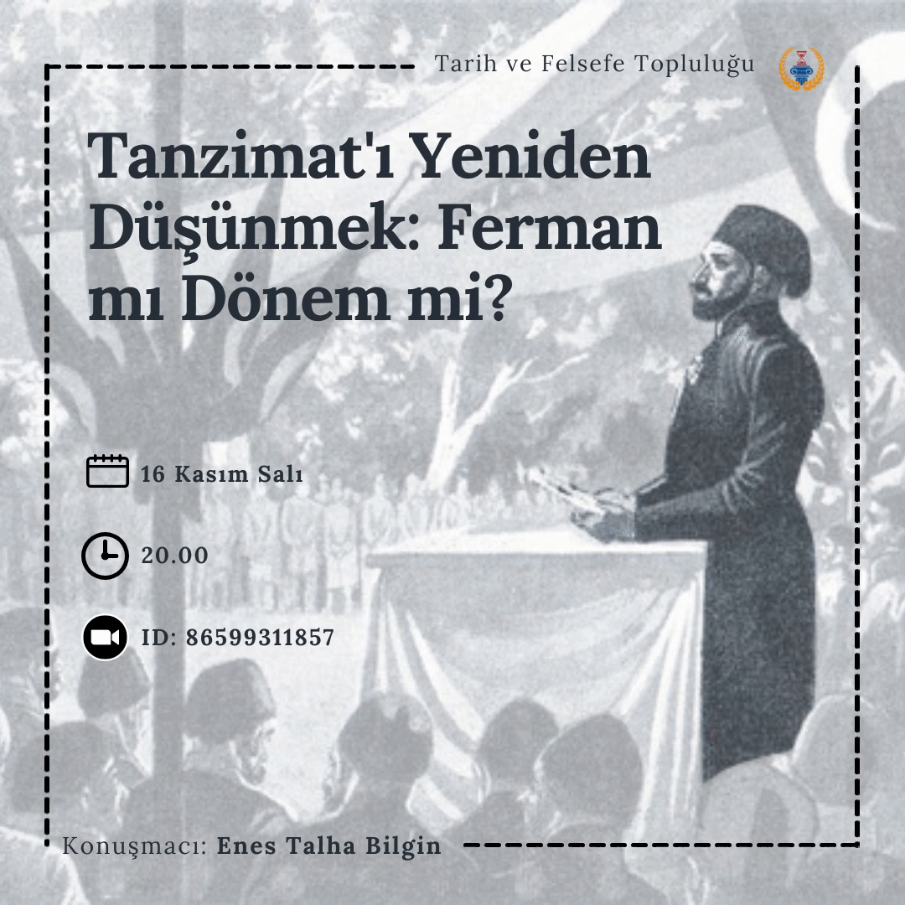
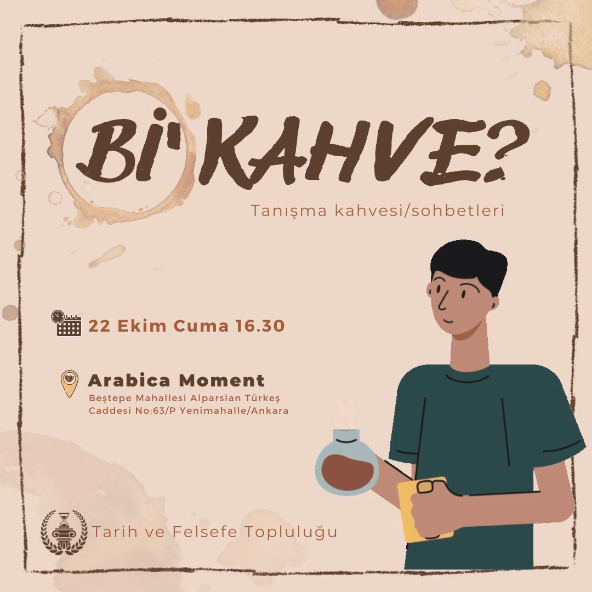

İlgi alanları Tarih ve Felsefe olan bir grup üniversiteli.
Hakkımızda
TOBB ETÜ Tarih ve Felsefe Topluluğu 2012 yılında kurulmuştur.
TOBB ETÜ’lülerin Tarih ve Felsefe alanlarında aydın,
münevver ve analitik düşünme yetilerine sahip olmasını
hedefleyen topluluğumuz bu iki alanda seminerler,
sunumlar, tartışmalar, geziler, film gösterimleri
gibi etkinlikler düzenlemektedir.
Yönetim Kurulu
Emin Can Seyran (Başkan)
Umut Bayatlı (Başkan Yardımcısı)
Beril Kaymak
Sevdenur Alkaya
Sefa Merve Altay
Engin Bolat
Osman İdik

Merhaba arkadaşlar,
Salı günü (16.12.2021) saat 20.00'de Osmanlı modernleşme sürecinde önemli bir yeri olan Tanzimat Fermanı'nı ve dönemini ele alacağımız bir etkinlik gerçekleştireceğiz. Hepinizi etkinliğimize bekliyoruz.
Detaylar afişimizde.

Merhaba arkadaşlar,
Öncelikle, Ortam'21 ile aramıza katılan arkadaşlarımıza hoş geldiniz diyoruz.
1.5 senelik online etkinliklerimizden sonra sizinle yüz yüze tanışmak için Beştepe Moment içerisindeki Arabica Coffe House'da bir tanışma kahvesi/toplantısı yapıyoruz. Topluluk hakkında bilgi almak isteyen, sosyalleşmek isteyen veya sadece sohbet etmek isteyen arkadaşlarımızı toplantımıza bekliyoruz. Katılımcı sayımızı belirleyebilmek için aşağıdaki formu doldurmanızı da rica ediyoruz.
Etkinliğimiz hakkındaki detayları yukarıdaki afişten öğrenebilirsiniz. Cuma günü 16:30'da görüşmek üzere...
Furkan Sarı
29.04.2021 17.00
Muaviye ve Emeviler İmparatorluğa Giden Yolda İç ve Dış Siyasetine Toplu bir Bakış
Enes Salih Demirsoy
01.05.2021 17.00
XVI. Yüzyıl Hint Okyanusunda Osmanlı-Portekiz Mücadelesi
Enes Talha Bilgin
04.05.2021 16.30
Osmanlı Modernleşmesinin Bir Parçası Olarak Gazeteler ve Mukaddimeleri (1831-1862)
Engin Bolat
06.05.2021 16.30
Aydınlanma Yazarlarının Eserlerinde Osmanlı İmgesi Bir Üzerine Değerlendirme
Burhan Aydın
08.05.2021 16.00
Kore Yarımadasının Kuzey-Güney Olarak Bölünme Süreci ve Savaşa Giden Yol
Osman Çağatay Okumuş
11.05.2021 17.00
Yugoslavya'nın Dağılma Süreci ve İç Savaşın Sebepleri